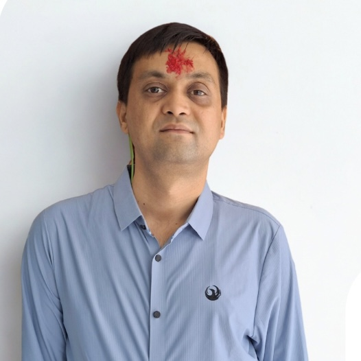

About Me and my intentions
I started this Website so that i can contribute and help other people in learning about various Environment related topics.
Hi i am Om prakash Ghimire, Once a student of Environment Science and has a good interest and knowledge in Computer Science.
My Qualifications and Skills
- B.Sc. in Environment Science from Tribhuwan University.
- One year B.Ed. in Health from Tribhuwan University.
- M.A. in Sociology from Tribhuwan University.
- Done few computer courses on computer basics and has a good knowledge of computer fundamentals, microsoft office and canva.
- Quick Learner.
- Gets the job done.